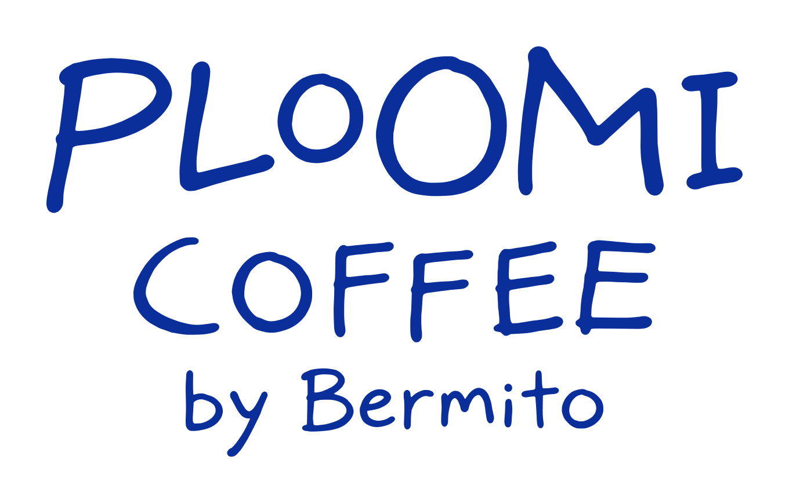

Origin and
processing.
A coffee’s growing region and the way its fruit is processed shape the choices we make at the roastery. Bermito shares origin and processing details alongside its coffees.
 Try our coffee
Try our coffee PLOOMI COFFEE / BY BERMITO
Ploomi is the business-focused coffee brand by Bermito. We bring coffee supply, barista training, equipment advice and ongoing brewing support to cafés and businesses across Kerala and India.
 A CONNECTION FROM ORIGIN TO CUP.
A CONNECTION FROM ORIGIN TO CUP.HOW BERMITO BEGAN
Bermito began with a memorable cup of coffee that stayed with us. We wanted to understand what made it taste the way it did, and to explore more coffees like it. That interest became our specialty coffee roastery in Kozhikode, Kerala.
We explore coffees from India and selected origins around the world. At the roastery, Bermito adjusts heat, airflow and time in small batches, aiming to develop sweetness while keeping each coffee’s individual flavours clear.
Ploomi puts that roasting experience to work at your bar. We begin with the practical details—your menu, equipment, team, preferred flavours and expected use—then discuss coffee, training and support around those needs.
Visit Bermito’s roastery story ↗WHAT WE BRING TO THE TABLE
A coffee’s growing region and the way its fruit is processed shape the choices we make at the roastery. Bermito shares origin and processing details alongside its coffees.
Bermito roasts in small batches, adjusting heat, airflow and time for each coffee. The aim is sweetness and clear flavour, with attention to the character of the bean.
Ploomi provides barista training, equipment advice and ongoing brewing support alongside coffee supply. The scope of each service is agreed around your business.
THE NAME ON THE BAG

Ploomi is made for the decisions a café or business faces: choosing a coffee for the menu, finding the right quantity and helping the team prepare it.
Our first three blends are concepts as the range takes shape. Their final coffee details and availability are still to be confirmed.
Explore the coffee conceptsCOFFEE FOR YOUR CAFÉ OR BUSINESS
Tell us what you serve, how much coffee you need and how you brew. We’ll discuss suitable coffees, paid samples and a quote.
Start a conversation